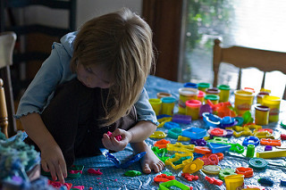

Comprehensive Services Are Provided:
Point of entry assessment for specific needs; Assistane with daily living activities; Social Workers provide therapy as needed; Educational support and extracurricular activities on a daily basis; Transportation to and from school/medical appointments.
